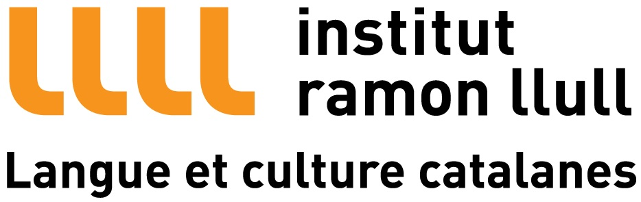
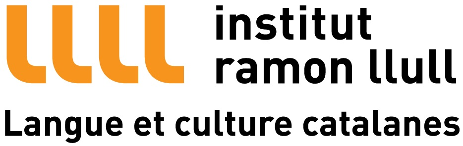

Welcome

Tab 1:Content1
Joel Martí
En plena pubertad, viaja hacia tierras de la Galia para aprender a defenderse en escena. Cuatro años despues vuelve a Barcelona, y tras abandonar su carrera circese en innumerables ocasiones, crea espontáneamente un espectáculo llamado "Crazy". En su último estirón (ya no crecerá más) se lanza de cabeza en el mercado del circo, propinándose un golpe tan severo, que ha marcado su carrera artística.Pablo Molina
Joven formado en la calle, a los nueve años ya bailaba como un verdadero b-boy. A los quince, descubre el circo en el Parc de la Ciutadella (Barcelona), confraterniza tanto con los faranduleros que decide darle un vuelco de 180 º a su vida y dedicarse a hacer verticales. Actualmente actúa acompañado de una sudadera en un numero llamado "El Fantasma" Tab 1:Content1
 
